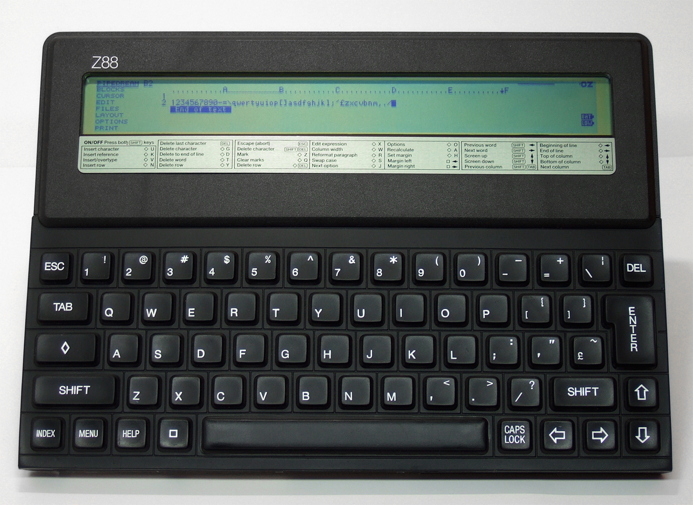
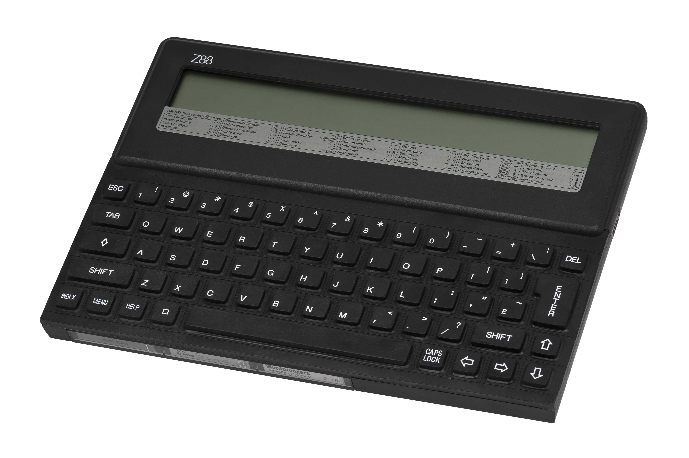

Cambridge Z88
Clive Sinclair's silent A4 notebook computer — 20mm thin, no moving parts

Overview
The Cambridge Z88 was Clive Sinclair's final computer, released in September 1987 by Cambridge Computer Ltd. — a company formed after Sinclair sold his brand name to Amstrad in 1986. At 294 × 210 × 23 mm (A4-sized) and 900g, it was extraordinarily thin for its era, powered by 4 AA batteries delivering 20 hours of use. Industrial designer Rick Dickinson — who had created the iconic looks of the ZX80, ZX81, ZX Spectrum, and Sinclair QL — designed the Z88's wedge-shaped ABS case, sealed rubber membrane keyboard, and all-solid-state architecture. The device contained only 4 chips, had no disk drives, and could be switched off at any time without data loss thanks to capacitor-backed RAM and a preemptive multitasking OS. Approximately 100,000 units were sold at £230.
Deep dive
The Z88 used a custom low-profile rubber membrane keyboard: a thin polyester membrane with conductive tracks, sealed with black rubber waterproofing. Pressing a key forced two membrane layers together through a spacer, registering an electrical contact with no mechanical switch, spring, or click mechanism. The result was near-zero audible feedback — designed for quiet use in meetings and libraries. An optional electronic "click" could be enabled via the Panel popdown for users who missed tactile feedback. The keyboard was spill-resistant. Special modifier keys included a "diamond" key for shortcuts and a "square" key for application switching. Sinclair and Dickinson believed portable computing should not announce itself audibly.
PipeDream, by Colton Software, was the Z88's bundled ROM-based "killer app" — a combined word processor, spreadsheet, database, and charting program in a unified document format. The same file could contain text, numbers, and formulas simultaneously, with no import/export between modules. Columns defined "slots" referenced by letter+number for spreadsheet-style formulas. A graphical "Map area" showed document layout alongside the editing area. This integrated approach was a radical alternative to the separate-application desktop model.
The Z88 evolved from "Pandora," a portable computer under development at Sinclair Research during 1984–85. Pandora was intended to be ZX Spectrum-compatible with a built-in ZX Microdrive and a flat-screen CRT whose image was magnified through folding lenses and mirrors. When Amstrad purchased Sinclair's computer assets in April 1986, Pandora was cancelled. Sinclair formed Cambridge Computer Ltd. and transformed Pandora into the Z88 — replacing the flat CRT with an STN LCD, dropping Spectrum compatibility, and replacing Microdrives with solid-state memory cards. Rick Dickinson documented this evolution in his Flickr album "Pandora to Z88" with 25 photos of sketches, clay models, and production units.
The Z88 had no moving parts whatsoever. Three proprietary slots accepted RAM, EPROM, or Flash cards (32 KB to 1 MB each). Slot 3 included a built-in EPROM programmer. The OZ operating system provided preemptive task-switching: any application could be suspended and re-entered exactly where left, even after power-off. An internal capacitor preserved RAM during battery changes for about 30 seconds.
The 128 KB ROM held PipeDream, Diary, Terminal (VT52 emulation), Printer Editor, BBC BASIC with Z80 assembler, and eight system "Popdowns" (Index, Filer, Calendar, Calculator, Clock, Alarm, Import/Export, Panel). Third-party software included games (Jet Set Willy Z88, Lemmings Z88), programming tools (z88dk C cross-compiler, Forth), and TCP/IP (ZSock). The Z88 Forever website (Garry Lancaster, since 1996) preserves ROM images, technical documentation, and service manuals.
Team & pioneers
- Sir Clive Sinclair (1940–2021) Founder and visionary. The Z88 was his last computer product after selling Sinclair Research's computer business to Amstrad in 1986 for £5 million.
- Rick Dickinson (1955–2018) Industrial designer responsible for the Z88's case, keyboard, and form factor. Previously designed the ZX80, ZX81, ZX Spectrum, and Sinclair QL.
- Colton Software Developer of PipeDream. Founded by Charles Colton; later produced PipeDream for Acorn Archimedes and other platforms.
Media

Sources
- Wikipedia: Cambridge Z88
- Z88 Forever (Garry Lancaster, maintained since 1996)
- Rick Dickinson Flickr: Pandora to Z88 (design evolution album, 25 photos)
- Sinclair User No. 61 (April 1987): Launch announcement
- BYTE Magazine (February 1989): Jerry Pournelle review
- Cambridge Computer Ltd. history and Sinclair Research transition